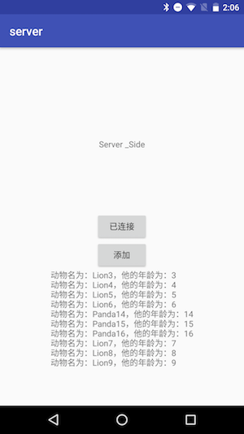
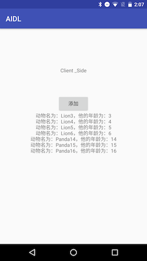

Android 应用层跨进程通信之AIDL
这次准备统一回顾整理下Android Binder，Android系统比较核心的东西，所以先回顾下Android AIDL 应用上层的跨进程通信。
AIDL定义
AIDL Android Interface Define Language， Android 接口定义语言，是Android提供的一种跨进程通信的方式。
AIDL 的本质是简化我们 跨进程通信的 开发，它使用的是 Binder 机制，Binder机制后面会详细介绍到
AIDL支持的数据类型
- Java的基本数据类型
- 实现Parcelable的实体类
- 其他AIDL生成的接口
- List 和 Map，List和Map对象的元素必须是AIDL支持的数据类型
AIDL实战
两个项目，两个进程，共同维护一个数据，Client端添加Panda，Server端添加Lion。都会同时添加进一个List
中去。Client端和Server端都用了前端界面去展示同步数据，先看看具体效果。
 
序列化/反序列化操作的实体类
实现 Parcelable 接口是为了后序跨进程通信时使用，简单地说，“序列化”就是将运行时的对象状态转换成二进制，然后保存到流、内存或者通过网络传输给其他端。
两个AIDL文件
1
2
3
4
5
6//实体类AIDL(Animal.aidl)
package com.rocka.aidl;
// Declare any non-default types here with import statements
// 这个文件的作用是序列化一个Animal对象， Animal.aidl供其他的AIDL文件使用
parcelable Animal;1
2
3
4
5
6
7
8
9
10
11
12
13//接口通信AIDL(AnimalManager.aidl)
package com.rocka.aidl;
// Declare any non-default types here with import statements
//导入刚刚序列化成功的Animal.aidl
import com.rocka.aidl.Animal;
interface AnimalManager {
void addAnimal(in Animal animal);
List<Animal> getAnimals();
}这里需要注意的是
1.实体类的包名和实体类的AIDL包名需要保持一致
2.非基本数据类型的导入需要导入全路径，接口通信AIDL里导入是导入实体类AIDL
3.除了基本数据类型，其他类型的参数都需要标记方向类型，in(输入)，out(输出)，inout(输入输出)
4.这里的两个AIDL文件分别在Client和Server端都有一份相同的拷贝。也可以使用Lib依赖的方式，依赖于两个通信进程。
生成的接口通信类
生成的路径：client/build/generated/source/aidl/debug/com.rocka.aidl.AnimalManager
后文会详细的对生成通信类做出理解归纳。
Client端
启动绑定服务端，并且通过iBinder来获取AnimalManager的实例。
1
2
3
4
5
6
7
8
9
10
11
12
13
14
15
16
17
18
19
20
21
22
23
24
25
26
27
28
29
30
31private void bindService() {
Intent intent = new Intent();
intent.setAction("com.rocka.aidl");
intent.setPackage("com.rocka.server");
bindService(intent, mServiceConnection, Context.BIND_AUTO_CREATE);
}
private ServiceConnection mServiceConnection = new ServiceConnection() {
public void onServiceConnected(ComponentName componentName, IBinder iBinder) {
Log.d("TAG", "Client serviceConnected ...");
mConnection = true;
animalManager = AnimalManager.Stub.asInterface(iBinder);
if (animalManager != null) {
try {
animals = animalManager.getAnimals();
Log.d("TAG", "Client :" + animals.toString());
} catch (Exception e) {
e.printStackTrace();
}
}
}
public void onServiceDisconnected(ComponentName componentName) {
Log.d("TAG", "Client serviceDisConnected ...");
mConnection = false;
}
};
Server端
Server端，通过Activity启动一个服务，然后绑定AnimalManager.Stub的实例，其中AnimalManager.Stub就是具体的接口内容的实现。
1
2
3
4
5
6
7
8
9
10
11
12
13
14
15
16
17
18
19
20
21
22
23
24
25
26
27
28
29
30
31
32
33
34
35
public IBinder onBind(Intent intent) {
return manager;
}
public final AnimalManager.Stub manager = new AnimalManager.Stub() {
public void addAnimal(Animal animal) {
synchronized (this) {
if (animals == null) {
animals = new ArrayList<>();
}
if (animal == null) {
animal = new Animal();
}
if (!animals.contains(animal)) {
animals.add(animal);
}
Log.d("TAG", "AnimalManager.Stub - addAnimal" + animals.toString());
}
}
public List<Animal> getAnimals() {
synchronized (this) {
if (animals != null) {
return animals;
}
return new ArrayList<>();
}
}
};
总结
- AIDL帮助开发者根据定义好的接口生成不同进程都可以共同访问的接口类
- Github